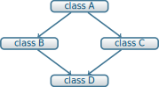

Héritage
L’héritage introduit un nouveau moyen de faire intéragir les classes entre elles
au moyen de relations dites hiérarchiques. Lorsqu’une classe B hérite d’une
classe A, B a accès, dans l’absolu, à tous les membres et les méthodes de
A 1. La classe B est donc basée sur la classe A mais peut également
ajouter de nouveaux membres ainsi que de nouvelles méthodes propres à sa
fonction voire modifier une partie du contenu de la classe mère A. La classe
B, qui est dite dérivée ou fille de A, est donc une spécialisation de A
tandis que la classe A constitue une généralisation de B.
Cette technique constitue l’un des fondements de la P.O.O de part la possibilité de développer de nouveaux “outils” en se fondant sur un ensemble “d’acquis” i.e. de classes préexistantes. La classe dérivée hérite des potentialités de la classe de base, lui en ajoute éventuellement, sans qu’il soit nécessaire de remettre en cause la classe de base. D’un point de vue technique, il n’est plus nécessaire de recompiler la classe de base, ni même de disposer du programme source correspondant. Seuls les fichiers d’en-tête soit ceux contenant la déclaration de la classe, sont requis. Enfin, l’héritage n’est pas limité à un seul niveau : une classe dérivée peut devenir à son tour classe de base. La notion d’héritage apparaît ainsi comme un outil de spécialisation croissante.
Notion d’héritage simple
La relation d’héritage entre deux classes s’effectue lors de la déclaration de
la classe fille. À titre d’exemple, considérons une classe de base nommée
polygone de laquelle dérive une classe fille rectangle :
class polygone { protected : unsigned int m_ordre; ... }; class rectangle : public polygone { public : // Méthodes propres à la classe rectangle void set_largeur (double largeur); private : // Membres propres à la classe rectangle double m_longueur; double m_largeur; ... };
La relation d’héritage entre les classes rectangle et polygone est
matérialisée par la déclaration
class rectangle : public polygone
qui spécifie que rectangle est une classe dérivée de la classe polygone. Par
ailleurs, le mot public signifie que les membres publics de la classe de base
(polygone) seront des membres publics de la classe dérivée (rectangle) : on
parle alors de dérivation publique. C’est le cas le plus fréquemment rencontré,
l’alternative étant de déclarer l’héritage comme d’ordre privé ce qui implique
que la classe dérivée n’a plus accès aux membres publics de sa classe de base.
Dans l’exemple précédent, si l’on convient que la classe rectangle est une
spécialisation de la classe polygone (en toute logique la classe rectangle
devrait être une spécialisation d’une classe quadrilatere), nous pouvons
parfaitement imaginer que la classe polygone dérive d’une classe plus générale
telle qu’une classe polyèdre. La notion de spécialisation croissante apparaît
dès lors naturelle.
À travers cet exemple, nous notons également l’apparition du mot clé protected
qui étend les possibilité d’encapsulation des données. Ce statut permet à la
classe dérivée d’accéder aux membres de la classe de base. Pour la classe
dérivée, il n’est donc plus nécessaire de “passer” par les méthodes de la classe
de base.
Nous pouvons résumer les différents statuts de membres2 de classe de la façon suivante :
-
private - les membres ne sont accessibles qu’aux méthodes et aux fonctions amies de la classe;
-
protected - les membres sont accessibles aux méthodes de la classe de base ainsi qu’aux classes dérivées. Ils demeurent toutefois inaccessibles à l’utilisateur de la classe contrairement au statut public comme précisé ci-dessous;
-
public - les membres sont accessibles non seulement aux méthodes mais également à l’utilisateur de la classe soit à n’importe quel objet du type de la classe.
Remarques importantes
De manière générale dans la programmation orientée objet, le développeur procède ainsi :
- Répertorier les objets nécessaires à la description du problème,
- Réfléchir aux liens logiques entre ces objets (composition3, amitié, héritage, …)
- Implémenter ces objets
- Créer des instances de ces objets et utiliser leurs méthodes pour répondre au problème donné.
Revenons sur le deuxième point et distinguons bien les deux liens logiques composition et héritage :
- Composition : Relation de type A_UN
- Par exemple, la classe voiture A_UNE roue (un des membres de voiture est une instance de la classe roue)
- Héritage : Relation de type EST_UN
- Par exemple, la classe voiture EST_UN véhicule (la classe voiture hérite du contenu de la classe véhicule et l’enrichit)
Cette phase de modélisation représente une grande partie du temps consacré à la résolution d’un problème. Si elle peut sembler de prime abord superflue, elle facilite à terme la mise en œuvre puis la maintenance du code. Il faut savoir qu’en théorie4 30 à 40% du temps consacré à un projet relève de sa modélisation, 50% à sa maintenance et seulement 10% à son écriture.
Appel des constructeurs et destructeurs
Les règles de construction et de destruction de classe s’appliquent également aux classes dérivées en tenant compte toutefois de la structure hiérarchique liant classes dérivées à classes de base. Ainsi, à la construction d’une classe fille, le constructeur de la classe de base est appelé avant toutes autres opérations. Tout comme la construction permet l’initialisation des membres d’une classe, il est possible de spécifier, lors de la construction de la classe dérivée, les paramètres de la classe de base. Dans l’exemple précédent, on peut donc écrire
class polygone { public: polygone (const unsigned int ordre) : m_ordre (ordre) {} protected: unsigned int m_ordre; ... }; class rectangle : public polygone { public: rectangle (const double longueur, const double largeur) : polygone (4), m_longueur (longueur), m_largeur (largeur) {} ... };
Si rien n’est spécifié, le constructeur par défaut est alors appelé.
Lors de la destruction d’un objet d’une classe dérivée, le destructeur de la classe de base est appelé automatiquement après le destructeur de la classe fille. Les appels aux destructeurs se font donc dans l’ordre inverse des appels aux constructeurs.
Notion d’héritage multiple
Le langage C++ dispose de possibilités d’héritage multiple. Cette généralisation permet notamment de s’affranchir de la contrainte hiérarchique imposée par l’héritage simple. La déclaration d’héritage multiple s’introduit ainsi
class rectangle : public polygone, public couleur {...};
où la classe couleur permettrait d’assigner une couleur aux objets
rectangle. Il est clair que la classe rectangle dérive des classes
polygone et couleur sans que ces dernières n’aient cependant de relation
hiérarchique entre elles: la classe polygone n’est pas une spécialisation de
la classe couleur et inversement.
Malgré l’intérêt et les quelques avantages qu’introduisent l’héritage multiple, l’utilisation reste assez peu répandue. La principale raison réside dans les difficultés qu’implique cette notion au niveau de la conception des programmes. Il est, en effet, plus facile de structurer un ensemble de classe selon des relations “grand-mère – mère – fille …” soit d’héritage simple que selon une modélisation faisant intervenir des liens autres que de parenté et introduisant des mécanismes de redondance. Le second problème qui touche à cet aspect de redondance, provient d’entités comme une méthode ou un membre qui sont présents plusieurs fois dans les ancêtres d’une classe. Pour illustrer ce point, considérons la situation suivante

qui correspond à des déclarations telles que :
class A { ... int x,y; .. }; class B : public A {...}; class C : public A {...}; class D : public B, public C {...};
Dans ce cas de figure, D hérite deux fois de A. Aussi, les membres de A
(méthodes ou membres) apparaissent deux fois dans la classe D. Pour ce qui est
des méthodes, bien que cela soit manifestement inutile étant donné qu’elles
réalisent les mêmes opérations, il n’y a néanmoins pas duplication du fait de
leur appartenance à la classe de base A. En revanche, les membres x et y
seront effectivement dupliqués dans tous les objets de type D. La question se
pose alors de savoir si oui ou non il y a redondance dans l’information
véhiculée par la classe D. Suivant le problème rencontré, on souhaitera
disposer de deux jeux de données en se contentant de les distinguer à l’aide de
l’opérateur de résolution de portée: A::B::x et A::C::x
Toutefois, et dans la grande majorité des cas, la duplication n’est pas
souhaitée sinon fortement déconseillée. Dans ces conditions, il est nécessaire
de préciser au compilateur de n’incorporer qu’une seule fois les membres de A
dans la classe D. Pour cela, il s’agit de spécifier, dans les déclarations des
classes B et C, que la classe A est “virtuelle” (mot clé virtual) :
class B : public virtual A {...}; class C : public virtual A {...}; class D : public B, public C {...};
La notion de classe virtuelle est propre au C++. D’autres langages intégrant la P.O.O proposent des outils différents afin de fusionner les fonctions répétées tandis que Java, par exemple, ne permet pas l’héritage multiple5. Cependant, la finesse des mécanismes sémantiques mis en jeu dans l’héritage multiple a rebuté beaucoup d’utilisateurs et explique la mauvaise réputation qu’a acquise ce mécanisme dans une partie de la communauté des développeurs.
Liaison dynamique et méthodes virtuelles
Pour illustrer l’intérêt de la liaison dynamique6, considérons l’exemple suivant :
class polygone { ... void affiche (); ... }; class rectangle : public polygone { ... void affiche (); ... };
que l’on utilise dans un programme principal de cette manière :
polygone my_polygone; rectangle my_rectangle; polygone *ptr_polygone1 = &my_polygone; polygone *ptr_polygone2 = &my_rectangle;
L’instruction ptr_polygone1->affiche (); appelle la méthode affiche de la
classe polygone. Or, si nous exécutons l’instruction ptr_polygone2->affiche
(); cette dernière fait également appel à la méthode affiche de la classe
polygone et non à celle définie pour la classe rectangle. Ce comportement
est du au choix de la méthode qui a lieu lors de la compilation du programme :
ptr_polygone2 étant un pointeur de type polygone, le compilateur lui a
attribué l’ensemble des méthodes de la classe polygone et non celle de la
classe rectangle. On parle alors de “ligature statique”.
Pour pallier cette limitation et préserver les liaisons entre classes et
méthodes, le C++ propose le mécanisme de fonctions virtuelles. Il suffit de
déclarer “virtuelle” (mot clé virtual) la méthode affiche de la classe mère
soit la classe polygone dans notre exemple :
class Polygone { ... virtual void affiche (); ... };
Cette instruction indique au compilateur que les éventuels appels de la fonction
affiche doivent utiliser une liaison dynamique et non plus statique. Autrement
dit, lorsque le compilateur rencontrera un appel tel que :
ptr_polygone2->affiche ();
il ne décidera pas de la procédure à appeler. Il se contentera de mettre en place un dispositif permettant de n’effectuer le choix de la méthode qu’au moment de l’exécution de cette instruction, le choix étant finalement basé sur le type exact de l’objet faisant l’appel.
Ce processus de virtualisation permet ainsi de redéfinir des méthodes7
suivant la finalité de la classe fille. D’autre part, il s’inscrit parfaitement
dans l’esprit de spécialisation inhérent à la notion d’héritage. La méthode
affiche redéfinie dans la classe fille rectangle permettra, par exemple,
d’afficher la longeur et la largeur du rectangle ou toutes autres informations
propres à la classe rectangle.
Dans l’exemple précédent, l’instruction
polygone *ptr_polygone2 = &my_rectangle;
demeure valable du fait de conversions standards automatiquement définies entre une classe de base et ses classes dérivées. Ainsi, des conversions implicites permettent de :
- convertir un objet de type
rectangleen un objet de typepolygone, - convertir un pointeur sur un objet de type
rectanglevers un pointeur sur un objet de typepolygone, - convertir une référence sur un objet de type
rectanglevers une référence sur un objet de typepolygone.
Ces conversions ne présentent aucun risque particulier puisqu’un objet de type
rectangle est avant tout un objet de type polygone. Dans le premier cas,
c’est une conversion d’objet qui est effectuée : seuls les attributs définis
dans polygone sont pris en compte, ceux supplémentaires définis dans
rectangle ne sont pas pris en considération. Dans les deux autres cas
(pointeurs et références), c’est uniquement une conversion de type qui est
réalisée : l’objet en lui-même n’est pas affecté. Ce qui implique qu’un pointeur
de type polygone puisse pointer vers un objet de type rectangle 8,
l’inverse n’étant pas vrai. L’instruction rectangle *ptr_rectangle =
&my_polygone provoquera une erreur de compilation.
Classe abstraite
Nous venons d’introduire dans le paragraphe précédent, la notion de liaison
dynamique qui permet de redéfinir une méthode au sein de classes filles. C++
autorise la déclaration de méthodes virtuelles pures, c’est-à-dire de méthodes
dont la définition n’est pas donnée. À titre d’exemple, la classe polygone est
destinée à être la classe de base de toutes figures géométriques planes. Suivant
leurs caractéristiques, ces figures vont être implémentées dans diverses classes
dérivées rectangle, cercle…. Dans ce contexte, la classe polygone sert
de cadre générique pour la définition des méthodes dans les classes dérivées. En
particulier, la méthode affiche peut être considérer comme une méthode
virtuelle pure au sens où sa définition dépend de la classe dérivée. La classe
rectangle affichera la longueur et la largeur tandis que la classe cercle
indiquera le rayon. Aussi, chaque classe dérivée redéfinira la méthode affiche
à sa guise, la classe de base polygone servant de dénominateur commun à
l’ensemble de ces objets plus ou moins hétéroclites.
La déclaration d’une méthode virtuelle pure se formalise ainsi :
class polygone { ... virtual void affiche () = 0; };
la définition de la méthode affiche étant donnée dans les classes
dérivées. Lorsqu’une classe possède au moins une méthode virtuelle pure, on
parle de classe abstraite. D’un point de vue conceptuel, une classe abstraite
est tellement globale, qu’elle n’est plus assez précise pour pouvoir décrire le
fonctionnement de certaines méthodes; elle ne constitue plus en soi un objet et
ne peut donc être instanciée. En revanche, les classes abstraites peuvent être
utilisées dans le cadre du polymorphisme ce qui facilite la manipulation
homogène d’une famille d’objets. L’exemple suivant explicite cet aspect en
utilisant un pointeur sur une classe abstraite filtre.
class filtre { protected : double m_frequence_coupure; double m_facteur_qualite; public : virtual double process_signal () = 0; };
La méthode process_signal est virtuelle pure en raison de la dépendance du
filtrage vis-à-vis du filtre utilisé. Une classe dérivant de filtre telle que
filtre_passe_bas et donc héritant de ces méthodes pourra légitimement définir
la méthode process_signal (filtre passe-bas à la fréquence de coupure).
Quand bien même on ne peut créer d’instance de classe abstraite, il est possible
de créer un pointeur sur la classe filtre. Ce pointeur peut, par la suite,
pointer sur des instances de classe dérivée de filtre. Dans le programme
principal suivant, on obtient ainsi un tableau dont chaque élément est un objet
différent mais néanmoins dérivé de la classe filtre.
// Exemple de classe héritant de filtre class filtre_passe_bas : public filtre { ... public: double process_signal (); ... }; // Redéfinition de la méthode process_signal pour la classe filtre_passe_bas double filtre_passe_bas::process_signal () { ... } const unsigned int gnbr_filtre = 3; int main () { // Un tableau qui contient des pointeurs vers des filtres filtre **tab_filtre = new filtre*[gnbr_filtre]; // On peut instancier filtre_passe_bas car elle n'est plus abstraite filtre_passe_bas F_LP; tab_filtre[0] = &F_LP; // Autres classes dérivées de filtre filtre_passe_haut F_HP; tab_filtre[1] = &F_HP; filtre_bande_passe F_BP; tab_filtre[2] = &F_BP; for (unsigned int ifiltre < 0 ; ifiltre < gnbr_filtre; ifiltre++) { // Chaque élément du tableau va appeller SA propre méthode tab_filtre[ifiltre]->process_signal (); } return 0; }
Footnotes:
nous préciserons par la suite les limitations liées à un tel accès
par membre, nous entendons membres et fonction membres i.e. méthodes
par composition, on entend qu’une classe possède parmi ses membres une instance d’une autre classe
généralement et plus particulièrement en Physique, cette phase de modélisation est trop souvent délaissée : la maintenance du code devient, dans ces conditions, une tâche extrêmement laborieuse
Java dispose de la notion d’interface, inconnue du C++, qui permet en général de traiter plus élégamment les problèmes.
on parle également de typage dynamique voir de ligature dynamique
à distinguer de la surdéfinition où un symbole a un sens différent selon le contexte. Dans la redéfinition, les deux sens du même symbole ont une partie en commun, la méthode redéfinie est seulement plus précise
on parle de polymorphisme sachant qu’en biologie, ce terme reflète la caractéristique d’un organisme à se présenter sous différentes formes sans changer de nature